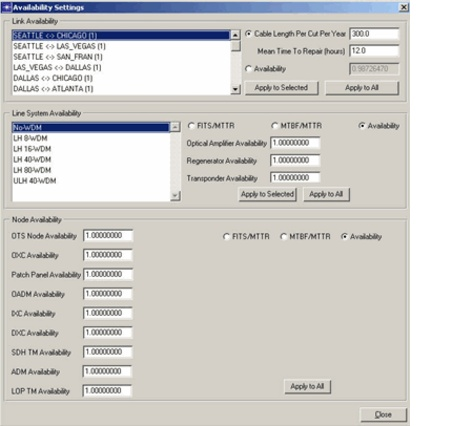
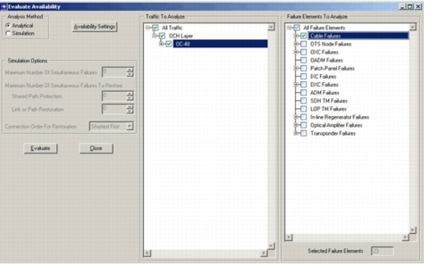
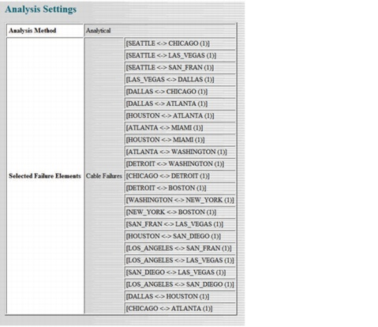
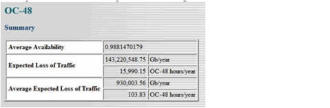
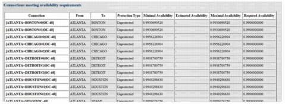
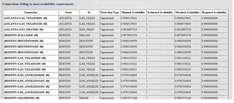
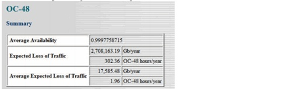
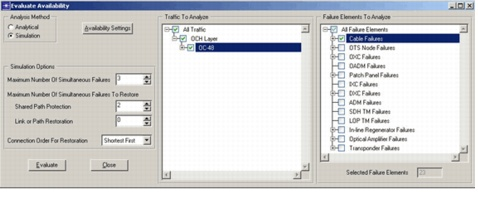
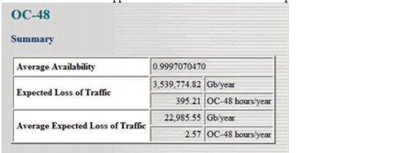
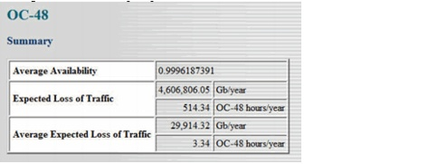

Availability Analysis
The availability analysis feature allows you to calculate the service availability of traffic routed in the network. It takes into account the failure rate of network devices and the protection types deployed in the network. You can use the calculated service availability values to verify if service level agreements (for example, 99.99 percent network availability) can be met.
Procedure 4-2 Evaluating Recovery Strategies
- Open the WDMGuru_Tutorial_Scenarios project.
- Select File > Open....
- Select the WDMGuru_Tutorial_Scenarios project, then press Open.
- Define the equipment failure rates.
- Select Network > Availability Settings. This dialog box allows you to specify the failure rate for different equipment types. Only link failures are considered in this example.
- Select Cable Length Per Cut Per Year in the Link Availability section and set the value to 300 kilometers. This means that per 300 km of cable on cable cut is expected each year.
- Set the Mean Time To Repair to 12 hours. Press Apply to All to apply this failure rate to all physical links in the network.
- Close the Availability Settings dialog box.
- Set the required availability for the connections of the OC-48 traffic matrix.
This project contains 4 scenarios for an example US network. Each scenario contains a design of the OCH layer for the traffic matrix called OC-48. Each of these scenarios uses a different protection strategy. The initially loaded scenario is called USA_Unprotected. In this scenario all traffic has been routed along a single unprotected path.
Note—If the USA_Unprotected scenario is not the default scenario, select Scenarios > Switch to Scenario and choose USA_Unprotected.
The failures rates of line system devices (e.g. Optical Amplifier) and nodes devices (e.g. OXC) can be specified as Mean Time Between Failures (MTBF) and Mean Time To Repair (MTTR), as availability (value between 0 and 1) or as Failures In Time (one FIT stands for one failure per 10e9 hours). In this example we only consider cable cuts, implying the availability of line system and node equipment is set to 1.

.

The Enter Required Availability dialog box appears.
- Fill in 0.99 as required availability. Click OK to set the required availability for each of the selected connections.
- Close the Connection Browser.
- Select Info > Evaluate Availability to calculate the availability of connections accommodated in the network.
- Select Analytical as Analysis Method. For unprotected and 1+1 protected traffic this method gives exact results.
- Expand All Traffic and OCH Layer (using the "+" sign) in the Traffic To Analyze section. Mark the OC-48 traffic matrix. This implies that the availability algorithm calculates the availability for all routed connections of this traffic matrix.
- Expand All Failure Elements (using the "+" sign) in the Failure Elements To Analyze section. All failure elements are displayed per failure type. Mark Cable Failures. This implies that only cable failures are taken into account to calculate the availability of the selected connections. Note that the number of selected failure elements amounts to 23 (as displayed in the lower right corner of the dialog box) because 23 physical links are present in the network.
- Click Evaluate to calculate the service availability for the selected traffic taking into account the selected failure elements.
- The Availability Analysis web report pops up. The first section of this report gives an overview of the analysis parameters set by the user. It shows that the analytical method was used and that only cable failures have been selected for this evaluation.
- Select OC-48 in the upper left corner of the report. The displayed section gives an overview of the availability of this traffic matrix. The first table ("Summary") shows the average availability and the expected loss of traffic for the entire traffic matrix. The average availability amounts to 0.988147 and the expected loss of traffic (ELT) amounts to 15,990.15 hours per year. The ELT is the total amount of traffic the network is expected to lose yearly due to the (cable) failures affecting the connections. The Average Expected Loss of Traffic represents the average ELT per connection.
- Close the Availability Analysis Report and the Evaluate Availability dialog box.



The second table ("Connections meeting availability requirements") gives an overview of the connections of which the calculated value for the availability is higher than or equal to their required availability. Per routed connection, the source and destination node are shown, as is the protection type, the minimal and maximal availability and the required availability. Note that because the calculation of the availability is exact, the values for the minimal availability and the maximal availability are identical for each connection.

The last table ("Connections failing to meet availability requirements") gives an overview of the connections of which the availability is lower than their required availability. Because the connections are deployed without protection, a lot of connections are failing to meet their availability requirement.

- Select Scenarios > Switch To Scenario > USA_Dedicated_Protected. In this scenario, all traffic is routed using the 1+1 protection scheme. For each connection, both a working and dedicated protection path is reserved. The signal is simultaneously transmitted along both paths. Upon a failure on the working path, the destination selects the protection path. Note that the failure rates in this scenario are identical to those set in the USA_Unprotected scenario. Verify this in the Network > Availability Settings dialog box. Also, the required availability has been set to 0.99 for each connection of the traffic matrix OC-48. This can be verified by right-clicking on a connection in the Network > Connection Browser and selecting Set Required Availability.
- Select Info > Evaluate Availability.
- Select Analytical as Analysis Method.
- Expand All Traffic and OCH Layer (using the "+" sign) in the Traffic To Analyze section. Mark the OC-48 traffic matrix. This implies that all routed connections of this traffic matrix are selected for the availability calculation.
- Expand All Failure Elements (using the "+" sign) in the Failure Elements To Analyze section. All failure elements are displayed per failure type. Mark Cable Failures.
- Click Evaluate to calculate the service availability for the selected traffic taking into account the selected failure elements.
- The Availability Analysis web report pops up.
- Select OC-48 in the upper left corner of the report. The Summary table shows that the average availability for this traffic matrix amounts to 0.999776 and the expected loss of traffic (ELT) amounts to 302.36 hours per year. Note that this latter value is much lower than for traffic accommodated without protection. So, due to using the 1+1 protection scheme, the achieved service availability is substantially higher. Also, all connections are now meeting their required availability.
- Close the Availability Analysis Report and the Evaluate Availability dialog box.

- Select Scenarios > Switch To Scenario > USA_Shared_path. In this scenario, the routing of working and protecting path is similar to dedicated protection, but the protection path is only activated upon a failure. This allows sharing protection resources between connections that are not considered to fail simultaneously. Note that the equipment failure rates and the required availabilities for the OC-48 connections are identical to those set in the USA_Unprotected scenario.
- Select Info > Evaluate Availability.
- Select Simulation as Analysis Method. The simulation method simulates different failure scenarios and inspects the impact of the failures on the traffic accommodated in the network. This method results in more precise values for the availability, if shared path protection or restoration is deployed in the network. The analytical method, on the other hand, does not take into account those protection schemes. It treats traffic with shared path protection or restoration as unprotected traffic. This results in a sub-border for the availability.
- Expand All Traffic and OCH Layer (using the "+" sign) in the Traffic To Analyze section. Mark the OC-48 traffic matrix.
- Expand All Failure Elements (using the "+" sign) in the Failure Elements To Analyze section. Mark Cable Failures.
- For the simulation method, some extra parameters are needed because the availability is calculated by simulating different failure scenarios. Therefore, you must specify to which level of detail you want to simulate the failures.
- Select 3 as Maximum Number Of Simultaneous Failures. This implies that only failure scenarios with less than 4 simultaneous failures are simulated to calculate the service availability. Thus, scenarios with 4 to 23 failures are neglected. This saves calculation time, but it also implies that the calculated value for the service availability will be less exact. However, due to the fact that the probability of those neglected higher-order failure scenarios is rather low, this estimation is justified.
- Select 2 as Maximum Number Of Simultaneous Failures To Restore for Shared Path Protection. This implies that in failure scenarios with less than 3 failures, the shared path protection scheme is applied to try to restore the connections. However, in scenarios with 3 simultaneous failures, shared path protection is not used. In those scenarios, the routed connections are treated as unprotected connections. This saves calculation time, but results in a less exact value for the availability.
- Select 0 as Maximum Number Of Simultaneous Failures To Restore for Link or Path Restoration. This parameter limits the failure scenarios in which the link or path protection scheme is applied (analogously to the previous parameter for shared path protection). As no selected connections are accommodated in the network with link or path restoration, this parameter is not important for this simulation.
- Select Shortest First as Connection Order For Restoration.
- Click Evaluate to calculate the service availability for the selected traffic taking into account the selected failure elements. Note that the simulation method is more time-consuming than the analytical method.
- After the calculation has finished, the Availability Analysis web report pops up. Note that now also the simulation options are displayed in the Analysis Settings section.
- Select OC-48 in the upper left corner of the report. The Summary table shows that the average availability for this traffic matrix amounts to 0.99971 and the expected loss of traffic (ELT) amounts to 395.21 hours per year. Note that both values are now approximate values, because the simulation method was chosen. The average availability for shared path protection is lower than for 1+1 protected routing. Due to sharing protection resources, particular higher-order failure scenarios affect more connections in the shared mode as opposed to connections in the dedicated protection mode.
- Close the Availability Analysis Report and the Evaluate Availability dialog box.


- Select Scenarios > Switch To Scenario > USA_Path_Restoration. In this scenario, traffic is routed along a working path and the protection resources are again shared between disjoint working paths. The main difference with shared path protection is that the recovery path is not fixed, but depends on the failing network elements. The restoration algorithm reserves sufficient protection resources to meet the design criterion, here being able to restore all traffic in case a single link fails. Note that the equipment failure rates and the required availabilities for the OC-48 connections are identical to those set in the USA_Unprotected scenario.
- Select Info > Evaluate Availability.
- Select Simulation as Analysis Method.
- Expand All Traffic and OCH Layer (using the "+" sign) in the Traffic To Analyze section. Mark the OC-48 traffic matrix.
- Expand All Failure Elements (using the "+" sign) in the Failure Elements To Analyze section. Mark Cable Failures.
- Select 3 as Maximum Number Of Simultaneous Failures.
- Select 0 as Maximum Number Of Simultaneous Failures To Restore for Shared Path Protection. As no selected connections are accommodated in the network with shared path protection, this parameter is not important for this simulation.
- Select 2 as Maximum Number Of Simultaneous Failures To Restore for Link or Path Restoration. This implies that in failure scenarios with less than 3 failures, the link or path restoration scheme is considered to restore the connections. However, in scenarios with 3 simultaneous failures, link or path restoration is not used. In those scenarios, the routed connections are treated as unprotected connections.
- Select Shortest First as Connection Order For Restoration.
- Click Evaluate to calculate the service availability for the selected traffic taking into account the selected failure elements.
- Select OC-48 (in the upper left corner of the report). The Summary table shows that average availability for this traffic matrix amounts to 0.99961 and the expected loss of traffic (ELT) amounts to 514.34 hours per year. This (approximate) value for the ELT is higher than for shared path protection.
- Close the Availability Analysis Report and the Evaluate Availability dialog box.
After the calculation has finished, the Availability Analysis web report pops up.

Comparing the results for the different protection schemes, it appears that the 1+1 protection scheme leads to the lowest expected loss of traffic and to highest service availability for the selected traffic matrix OC-48. This is not always the case. Which protection scheme leads to the highest service availability for a certain traffic matrix depends on the network topology, the traffic matrix itself, and the selected failure elements and their failure rates.
- Select File > Close.
- Select Don't Save in the Close Confirm dialog box.
End of Procedure 4-2